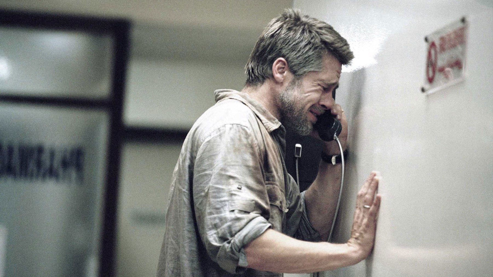

Babel compie 20 anni: 6 curiosità sul film
Quattro paesi, sei lingue, quattro formati di pellicola e una lite tra regista e sceneggiatore che finì con un divieto d'ingresso a Cannes
Alla notte degli Oscar del 2007 Babel arrivò con sette candidature, seconde solo alle otto di Dreamgirls, e se ne andò con una sola statuetta. Vent'anni dopo il film di Alejandro G. Iñárritu resta uno dei più ambiziosi del suo decennio: una sola storia sparpagliata su quattro paesi, raccontata in lingue che non si capiscono tra loro. Ecco sei cose sul suo dietro le quinte che aiutano a rivederlo, senza svelare nulla oltre la premessa.
Da dove nasce l'idea dei quattro paesi?
La storia partì dallo sceneggiatore Guillermo Arriaga, che l'aveva pensata in due soli paesi. Fu Iñárritu ad allargarla a quattro luoghi, ed è per questo che nei titoli compare con il credito di «idea» accanto ad Arriaga. Il risultato è la premessa che il pubblico italiano conobbe nell'ottobre 2006: un colpo di fucile sparato da due ragazzi marocchini che mette in moto una catena di conseguenze per una coppia di americani in vacanza, una tata messicana e un'adolescente giapponese sorda. Nessuno dei quattro gruppi si incontra davvero, e proprio per questo il film ha bisogno di un montaggio che li tenga uniti.
Cosa successe tra Iñárritu e Arriaga?
Una rottura che da allora ha segnato la carriera di entrambi. Dopo la fine delle riprese i due, che avevano già lavorato insieme a 21 Grams, litigarono su chi dovesse essere considerato l'autore di 21 Grams: Iñárritu si presentava come unico autore, Arriaga difendeva l'idea del cinema come lavoro collettivo. Il conflitto arrivò fino a Cannes, dove nel maggio 2006 Iñárritu impedì ad Arriaga di partecipare alla proiezione di Babel. Fu una scelta clamorosa, perché lo sceneggiatore sarebbe poi stato candidato all'Oscar per il copione dello stesso film. Chi ama le storie a incastro troverà il dettaglio utile: quel meccanismo nasceva da una collaborazione che, a film finito, non reggeva più.

Perché girare in quattro formati diversi?
Per far sentire allo spettatore, senza didascalie, in quale parte del mondo si trova. Il direttore della fotografia Rodrigo Prieto usò quattro formati: 16 mm, Super 35 a tre perforazioni, 35 mm e anamorfico 18,5. Le riprese principali durarono dal 2 maggio al 1 dicembre 2005 e toccarono Giappone (Ibaraki e Tokyo), Messico (El Carrizo, Sonora e Tijuana), Marocco (Ouarzazate e Taguenzalt), California (San Diego) e Alberta (Drumheller). Quando il montaggio salta da un continente all'altro, la grana e il formato dell'immagine cambiano con lui: un trucco da cinema più che da trama, ed è tra le ragioni per cui Babel si guarda ancora volentieri su uno schermo grande.
Rinko Kikuchi è davvero sorda?
No. Quando venne scelta aveva 23 anni e, secondo Wikipedia, la sua assunzione suscitò dubbi proprio perché non è sorda. Dopo nove mesi di provini con centinaia di attrici ottenne la parte una settimana prima dell'inizio delle riprese, nell'aprile 2005. Il suo personaggio le valse la candidatura all'Oscar come miglior attrice non protagonista: Kikuchi è stata la quarta persona nella storia dell'Academy a essere candidata per un ruolo in cui non parla. Vinse inoltre il premio della National Board of Review come rivelazione femminile, a pari merito con Jennifer Hudson, e quello del Gotham come attrice rivelazione.
Quante lingue si parlano in Babel?
Sei: inglese, spagnolo, arabo, giapponese, lingua dei segni giapponese e berbero. È il cuore del titolo, che richiama la torre biblica e l'idea di persone che non riescono a capirsi. Nelle scene messicane furono ingaggiati come comparse immigrati veri, scelta che dà a quelle sequenze una ruvidezza difficile da ottenere con attori professionisti. Se ti è piaciuto il nostro pezzo su The Departed, che prese gli Oscar che Babel sfiorò, vedrai che i due film, pur così diversi, raccontano un mondo in cui un solo gesto si propaga ben oltre chi lo compie.
Quanti premi ha vinto davvero?
Più di quelli che la sera degli Oscar lascerebbe supporre. A Cannes, dove il film venne presentato il 23 maggio 2006, Iñárritu vinse il premio per la miglior regia e la giuria ecumenica gli assegnò il suo riconoscimento; il montaggio di Stephen Mirrione ricevette il Vulcan Award. Seguì il Golden Globe come miglior film drammatico. Agli Oscar Babel ottenne candidature per film, regia, le due attrici non protagoniste Adriana Barraza e Rinko Kikuchi, sceneggiatura originale, colonna sonora e montaggio, e vinse soltanto la colonna sonora di Gustavo Santaolalla. Miglior film e miglior regia andarono a The Departed e a Martin Scorsese. In Italia il film ha incassato 2,8 milioni di euro, secondo MYmovies, ed è stato premiato con il David di Donatello come miglior film straniero. Quanto al budget, Wikipedia indica 25 milioni di dollari e un incasso mondiale di 135,3 milioni.
Vale la pena rivederlo oggi?
Sì, soprattutto se lo si guarda per le scelte di messa in scena più che per l'incastro delle storie. Anche MYmovies, che gli assegna 3 su 5, riconosce l'ambizione del progetto ma lo trova a tratti costruito, con meccanismi narrativi un po' artificiali: è un giudizio che condividiamo in parte, perché il film convince di più quando resta nei volti e nei silenzi che quando spiega i suoi collegamenti. Lo consigliamo a chi ama i film corali e a chi vuole scoprire come si può raccontare la distanza tra le persone senza usare una sola lingua. Se invece cerchi un altro film in cui l'immagine dice ciò che i personaggi non riescono a dire, rileggi anche la nostra curiosità su Il labirinto del fauno, che compie vent'anni a ottobre come questo. In Italia uscì il 27 ottobre 2006; a ottobre 2026 non risulta in nessun abbonamento nei dati TMDB, quindi conviene guardare le piattaforme di noleggio.
Domande frequenti
Quando è uscito Babel in Italia?
Venerdì 27 ottobre 2006, dopo la presentazione a Cannes del 23 maggio 2006, dove Iñárritu aveva vinto il premio per la miglior regia.
Quanti Oscar ha vinto Babel?
Uno, su sette candidature: la migliore colonna sonora originale, firmata da Gustavo Santaolalla. Miglior film e miglior regia andarono a The Departed e a Martin Scorsese.
In quali paesi è stato girato Babel?
In Giappone, Messico, Marocco e Stati Uniti (California), con riprese anche in Alberta, in Canada.